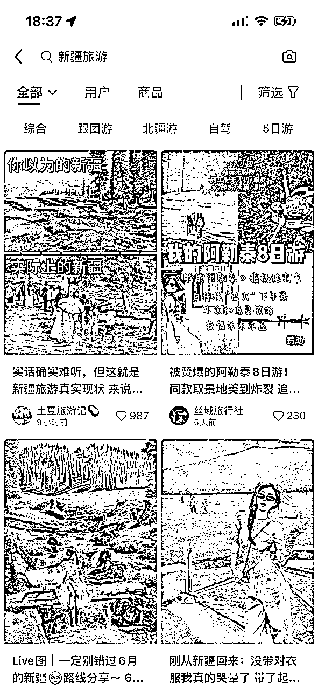
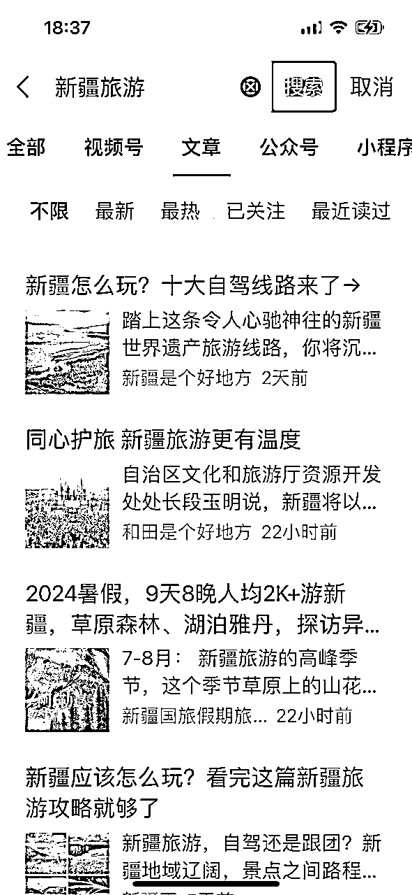
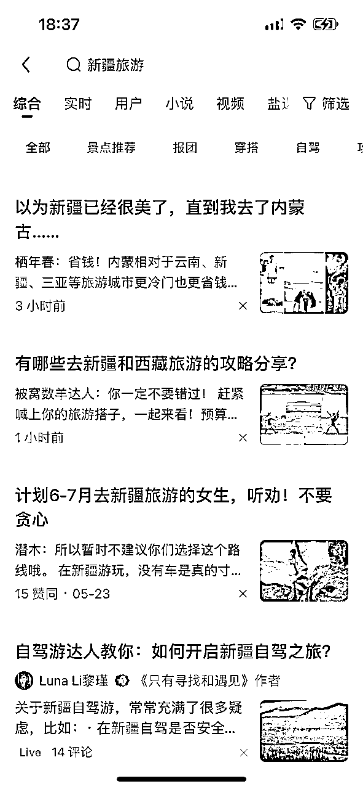

来源：https://hadad3oapn3.feishu.cn/docx/QHtTdzU78oNtwcxJCt9cjIrOn4f
哈喽，大家好，我是李校长，校长会创始人，小红书头部MCN机构，高客单项目顶级操盘手
根据上期文章说到的，医美行业老板，因为笔记内容的问题，每个月错失的百万利润的例子，为了避免大家后续遇到相似的问题不知道怎么办，今天给大家出了一篇关于小红书如何快速产出优质文案的文章。
在此之前呢，我先给大家讲讲
底层逻辑一
找到行业用户的需求和自我表达的交集，不要自我陶醉在笔记内容中。我们要用心的从客户的角度去思考问题，思考真正的内心需求是什么，即用户痛点，行业痛点。
在小红书这个平台上，用户追求高效，用户只关心自己的需求是否被满足，对内容的完美程度并不是最重要的。
底层逻辑二
小红书的爆款明确持续且容易被复制。
爆款还要是一篇持续受到欢迎且很容易被其他人模仿的内容。
平时日常生活浏览笔记时，我们可以关注那些在长期一直受欢迎的内容，并且去分析去拆解，它成为爆款的成功因素，并在生活中去实践一下，发布发布笔记，在笔记中运用出来。
底层逻辑三
专注并让用户明确你的定位，什么意思呢？
就好比一篇笔记文案内容，你要让用户一下子很明确的知道你是做什么的，在笔记中清晰的传达你的定位和你想表达的主题。从而吸引到更多对该主题感兴趣的用户。
爆款就是在消费者中引起强烈反响的单品或系列产品
很多人的理解是点赞、收藏、评论数据好的笔记都是爆款，这样理解当然是没错的，因为这种笔记己经带来用户的直接反馈和有效互动。
但是你也会发现，从变现的角度出发，有很多点赞、收藏很好的笔记缺少评论，也有很多点 赞、评论、收藏都很好的笔记，没有变现到一分钱。
比如有一个马尔代夫酒店的视频笔记，笔记评论的数量大于 100，但是评论内容基本是
“好美呀”
“天气不错”
“鲸鱼会咬人吗”
“不会游泳怎么办？
…
实际上，这样 “热闹”的笔记是很难变现的。
举个例子，之前我做家装全屋定制的时候，第一个月就做出了几十万的浏览量和万赞万收藏，可是遗憾的是，这篇笔记我们除了收获到一些“热闹”外，这篇笔记我们没有赚到一分钱。
事实上，运营过小红书的你就会发现，单纯靠笔记带来一些点赞收藏的互动反馈，并不是一件难事，那难得地方是什么呢？
难点在于我们通过笔记来进行变现
我们需要去持续输出一些可以变现的爆款笔记，作为以变现为目的小红书运营者们，我们应该记住小红书是一门生意，而不是做爆款。
想要通过笔记来进行变现在这里
有效爆款：就是我们可以让目标用户进行咨询、添加微信、直接购买产品的笔记，即称有效爆款笔记。
比如，可以找到目标用户，能够唤起他们的购买需求的，能够让他们触发咨询或购买，点赞关注收藏评论互动的笔记。如果我们去针对这群可以交易付款的精准客户来进行创作笔记，这样运营出来的小红书笔记会更具有侧重点和针对性，这就是爆款笔记。
非有效爆款：就是用户看到该笔记之后，进行点赞收藏评论，但是不产生咨询加微信以及购买的笔记。
比如，科普类的图文视频，科普知识点、科普产品功效的都算，即引流类文章，可以让客户学到东西的笔记。
有效咨询：可以直接转化到自己的商业业务的
比如：你是做雅思留学的，然后你的这篇文章吸引到一些大学生想对雅思报名又或者留学咨询，用户精准，属于有效咨询。
非有效咨询：和自己的商业业务没有关系的其他咨询。
比如，你是做不锈钢全屋定制的，但是却有好多想做木质全屋定制的人来向你开口私信咨询，投流费用扣了不说，引进来的却是和自己业务毫无关系的用户。
能变现的笔记一定是有效的爆款笔记引发的有效咨询，很简单的道理，你的笔记文案内设置钩子话术，引发了客户直接购买的欲望或者私信咨询的欲望，那么这篇笔记就称为变现笔记。
一般来说，粉丝数比点赞数多的、新号但是有千赞的作品、评论数大于点赞收藏的爆款笔记更具有商业价值。
为什么呢？
粉丝数比点赞高说明笔记的转粉率更高
新号但是有千赞说明不是头部账号，但是选题和账号定位切中用户需求
评论数大于点赞、收藏说明该笔记可以引发用户的需求评论，产品了咨询。
爆款只是最后结果，只是这篇笔记带来了用户的点赞、收藏、评论、转发等互动行为，那点 赞、收藏、评论、转发的原因是什么呢？
一定是戳中并满足了用户的某项需求，且这类人群数量很大、需求很成规模
比如
点赞是因为用户在态度上表达支持，收藏是因为将来可能有用，评论是因为想要有很多交互和表达
转发是因为这条信息值得分享给朋友
关注是因为希望能够收获后续更新
爆款是这些互动行为的结果，切中并满足需求是带来互动行为的原因。
在了解了这么多的关于小红书爆款内容的底层逻辑后，现在再去给大家讲解如何工业化高效产出优质文案，会更容易听的懂些。
那么问题来了
首先，寻找对标文案
如何寻找对标文案呢？
我们可以去小红薯上搜索关键词、微信公众号上搜索关键词、知乎上搜索关键词等等各个平台
小红书：

微信公众号：

知乎：

文案修改前：
1.L型阅读办公区：方便，独处空间
2.洗衣区：一整面收纳柜，极大的增加了储物空间
3.小型bar：下方放置洗衣机，洗衣+咖啡两不耽误
4.开放式展示柜，既能收纳东西又能展示收纳物品
5.封闭式展示柜：空间上没有分离感
文案修改后：
阳台纳入客厅，客厅与阳台项链的墙垛不能打拆掉
如何设计让它的颜值和实力并存呢？
1.L型阅读区
L型阅读办公区，小户型读书+办公宝藏地
在阳台也能划分出一片天地，美观又实用
2.洗衣功能区
定制一整面墙的收纳柜，一路延伸到阳台；
中间留空位置，放置洗衣用品、收纳篮等物品
3.小型功能bar
小空间也能满足每天的拿铁仪式感
下方放置洗衣机 洗衣+咖啡两不误
4.开放式展示柜
阳台的收纳柜和客厅柜拉平，减少墙垛的存在感；
原木风柜门搭配百叶窗，看上去温馨又整洁；
柜体做开放式设计既能收纳东西，又能展示收纳物品一举两得
5.封闭式收纳柜
用墙垛位置做了封闭收纳柜，收纳柜与墙垛平齐；
为了视觉上的完整，隐藏起来，视觉上更统一完整，空间上没有了分离感
方便大家后面每次发布笔记内容的时候，我建议大家去建立一个文案库，把自己的产品功能功效、自己产品的优势、自己产品的调性价值、品牌的价值、企业的文化、做产品的一个价值观念、整个行业的痛点需求、用户关心的痛点，行业内各品牌的竞争优劣势，同行业产品对相似产品的优势等等
下次需要的时候直接从文案库里面调出来放到文心一言里面再进行二次加工，这样产生出的文案不会被查重而且十分的高效。
今日的《如何快速产出优质文案》就到这里结束啦，有什么问题的圈友们可以在评论区留言，我会回复大家的！记住，爆款文章是容易且可多次复制的！